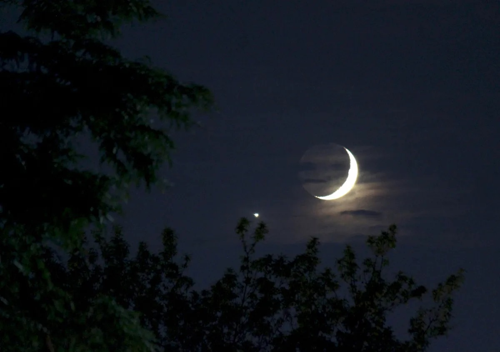
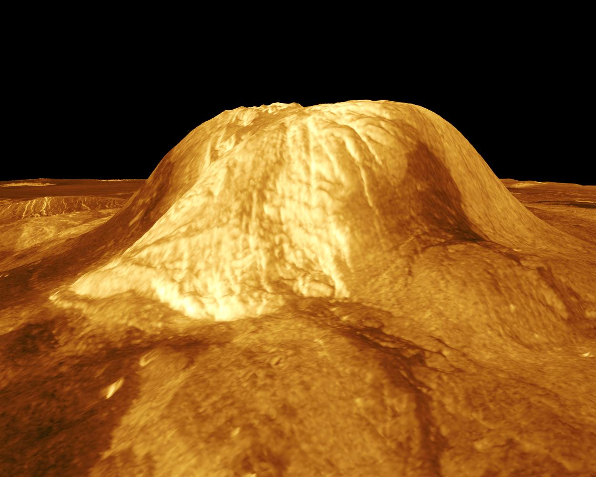

Venus
Venus is the second planet from the Sun, and the sixth largest planet.
It’s the hottest planet in our solar system.
Twin sister
Venus is similar in size to Earth

'Close'Neighbor
At its nearest venus,is 38 millian miles (about 61 million km)from Earth
Long days
Venus' day is longer than its year

Active Surface?
Venus has volcanic plains and rifts

'Recently'Resurfaced
Venus' surface appears young(100s of millions of years.)
Runway Greenhouse
Venus' thick atmosphere traps heat

Foul Clouds
Venus' sulfuric acid clouds smell like rotten eggs

Science Hot Spot
More than 40 spacecraft have visited
Ingredients for Life?
Venus is an unlikely place for life as we know it
Backward Sunrise
The sun rises in the west;sets in the east.